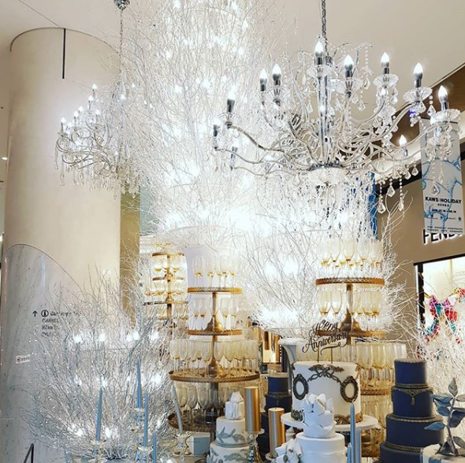

편집매장 A 에서 M(영국인)이 티셔츠를 한장구입하고 생각이 바뀌어 리펀 요청했는데
택스리펀 신청제품이라(???) 리펀이 불가능하다는 소리를 듣고 왔다고 나에게 질문을 해왔다
영수증을 확인해 봤는데 어디에도 리펀불가 / 택스리펀 받았음 이란 스탬프 내지는 메세지를 발견할 수 없어서
1. 한국말 못하는 외국인 방문객이라 (귀찮아서) 리펀 거절했나?
2. 진짜 택스리펀 신청하면 외국인은 매장서 교환 / 환불 못받는 정책이 있나? 그거 참 억울하네
란 두가지 생각이 떠올랐고 ㅋㅋ
M 역시 외국인 방문객중 - 물건 구입하고 택스리펀 받은다음에 환불하기- 란 방법으로 이걸 악용하는 사람이 많나?
란 생각을 잠깐 했단다
나: 아니 물건파는 사람들이 그렇게 까지 멍청할려구 ㅡㅡ;; 난 한국서 택스리펀은 안받아봤지만
최소한 영수증에 리펀해줬다는 도장을 찍어주던지 아님 무슨 마크를 달지 않을까?
M: 가격 지불할려고 했더니 판매직원이 "택스리펀?" 이라고 물어봐서 "예스" 라고 대답했고 몇시간 뒤 마음이 바뀌어서 다시 가서
"리펀?" 이러고 물어봤더니. "no, you tax refund" 뭐 이런식으로 대답해서 난 그렇게 알아들었어
라고 대답함
영수증을 아무리 자세히 들여다봐도 어디에도 택스리펀 신청했다는 / 받았다는 걸 알수있는 표시도 없고
매우 이해가 안가는 상황이었음
그래서 M의 티셔츠와 영수증을 들고 내가 방문했다 ㅋㅋㅋㅋㅋㅋㅋㅋㅋ
처음에 아무설명없이 티셔츠 리펀 가능하냐고 물어보니까
세일제품은 교환/환불 불가능 하다고 대답했다
그래서 세일제품 교환/환불 불가 안내가 어디에 나와있냐고 질문하자
잠시 망설이더니 아무대답없이 환불을 해줬다.
더더욱 이상해서 ㅋㅋㅋㅋㅋ
나: 세일제품은 환불이 불가능한가요?
직원: 네 저희가 세일제품은 마진 얼마 안남기고 파는거라 교환/환불 불가능하고
판매할때 원래 안내 나가고 영수증에 도장도 찍어주는데 안내 못 받으셨나봐요
(*M의 영수증에는 '세일상품 교환/환불 불가 도장이 찍혀있지 않았다
- 그래서 매장쪽 실수도 있으니 그 이상 말 안하고 걍 환불해주는 것 같다는 느낌적 느낌)
나: 아..그럼 다른 질문이요. 이제품 어제 여행온 제친구가 구입했고. 매장에서 택스리펀 신청해서 환불못해준다는 식의 안내를 받았다고 설명하는데 그런 규정이 있나요?
직원: 네? 저희 매장에 그걸 영어로 설명할 직원이 있을리가....
나: 그냥 간단하게 "리펀?" 이라고 단어로 물어봤더니 "택스 리펀" 이란 단어를 말하면서 거절했다고 설명하더라구요
직원: 아마 그럼 영어로 설명이 안되어서 그런거 같을거에요 저희 매장은 택스리펀 서비스를 하지 않아요
나: 네 그럼 정리하자면 택스리펀 신청을 해도 교환/환불은 가능하고 어제 거절은 짐작컨데 세일상품 이라서 그렇다는 거죠?
직원: 네 아마 커뮤니케이션이 잘 안되어서 그랬던거 같아요. 친구분께 잘 설명해 주세요 세일상품 교환/환불 안된다구요.
라고 대화종료
이 이야기를 M에게 해줬더니 이해한단다.
언어가 안 통하니 일어날 수 있는 일이라고.
초반에는 점원이 귀찮아서 걍 거짓말했나? 란 생각에 분기탱천했다가
그게아니었구만 - 으로 종료된 상황임 ㅋㅋㅋ
그리고 영국살때 초반 언어가 안되어서 개삽질했던 기억들이 주마등처럼 지나가고 ㅋㅋ
같은 브랜드 직원인데 문의할때마다 대답이 달랐던 거지같던 영국 샵들의 서비스가 생각나면서
좀 웃겼다
난 윈도우쇼핑을 정말 사랑하는 사람이었는데
한국와서는 백화점의 밀착 서비스땜시 ASOS의 노예가 되어버렸음.......OTL
플러스 요즘엔 날이더워 최소한의 사람꼴할 의욕도 잃어버림
아래위 깜장바지+티 로 통일
신발도 잔뜩 사놓고 더워서 샌들 또는 슬리퍼밖에 신을수가 없다 ㅡㅡ;;
더워도 너무 더워요우우;;;
